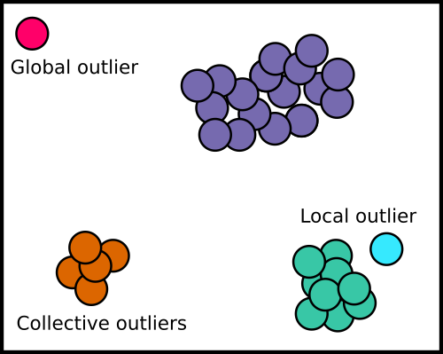
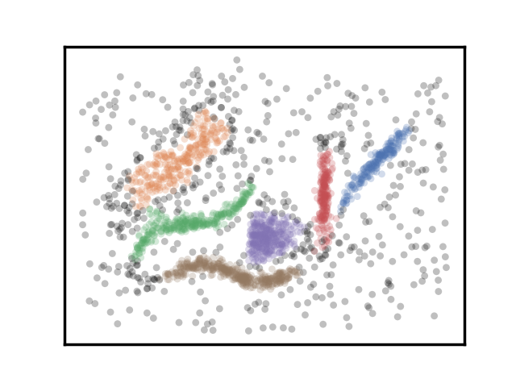
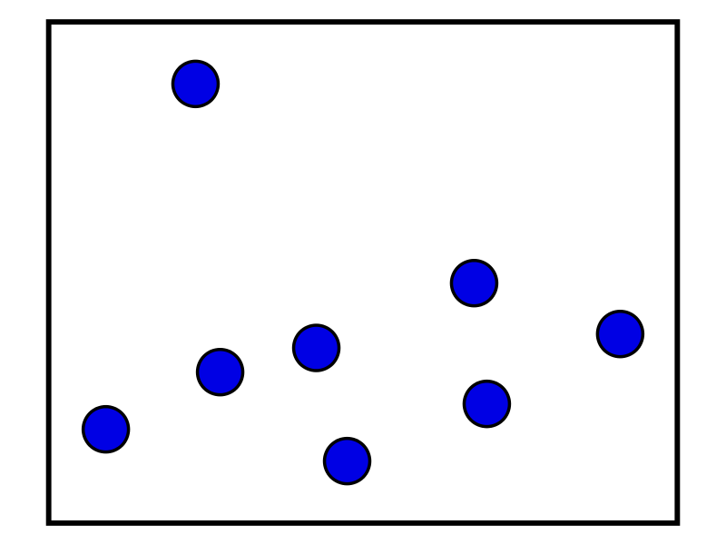
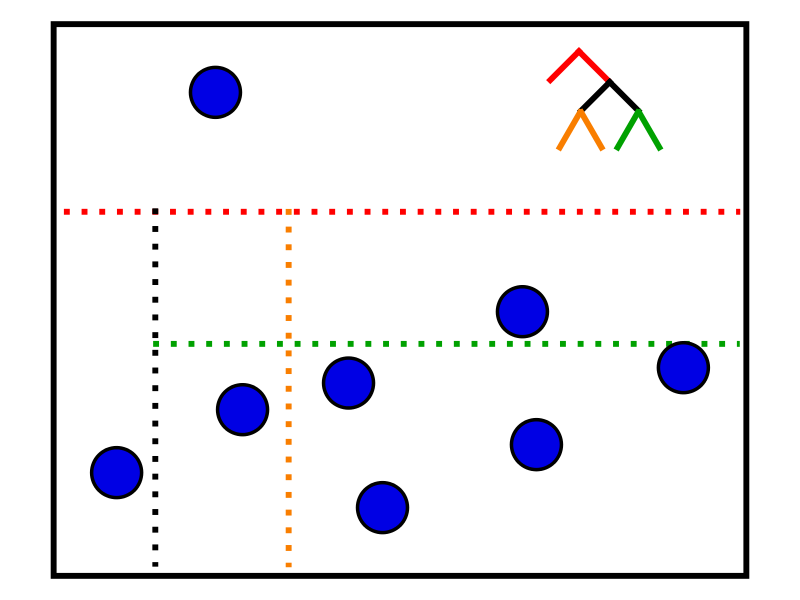

O is for Outlier Detection
Outlier (or anomaly) detection is the technical term for “finding weird stuff”. It’s used in a wide variety of applications including malware detection and looking for credit card fraud. For example, if you live in Ottawa but your credit card was used to buy a gaming console in Boise, Idaho (without any other purchases) that would be anomalous. Outlier detection is related to clustering. In clustering we are trying to find the groups of related data. In outlier detection we are trying to find the points that don’t belong to any groups. There are three different categories of outliers
- Local (or contextual) outliers: These are points that are close to groups of data but don’t belong to any cluster. This could be an email which seems mostly legitimate except something seems a little off (e.g. “Follow us on Twittterr”) .
- Global (or point) outliers: These are the data points that are completely off on their own and are far away from other data points. Going back to the email example, this would be like having an email in German if the rest of your inbox had English/French emails.
- Collective outliers : These are groups of outlying points which may have some underlying pattern. This would be like having a spam campaign of emails where they look strange compared to normal email, but are all related to one another.

In many (all?) large datasets there are bound to be lots of outliers. It’s like being a woman trying to find a partner on a dating app: “the odds are good but the goods are odd”. It’s relatively easy to find anomalies but it’s more challenging to find interesting outliers.
- It’s worth noting that in a lot of cases if something is anomalous it doesn’t necessarily mean that it is bad. It just means that the data point is different from the others. However, it probably means that it is more interesting and may need to be investigated.
- To find out if an outlier is truly interesting or not you need to combine it with extra context. For example, if you find an anomalous credit card purchase (such as a gaming console in Idaho) it’s worth looking at the other purchases around that time (did they also buy plane tickets to Idaho?).
- You can also find interesting patterns by grouping anomalies together. In malware detection this could mean “did a bunch of suspicious activity happen on one computer in a short time frame?”. Here you need something else to group on (in this case it’s by looking at anomalies for one computer at a time).
How do we actually find anomalies?
Low frequency events
One of the easiest ways to find outliers is to say “show me events that occur less than X% of the time”. This is really easy because we can just count all the events we are interested in and then divide by the total number of events. Let’s imagine we have a survey of what people put in their coffee
| Raw count | Frequency (count/total) | |
|---|---|---|
| Nothing (black) | 95 | 0.35 |
| Milk | 120 | 0.44 |
| Sugar | 53 | 0.20 |
| Butter | 2 | 0.01 |
In this case it’s pretty clear that people putting butter in their coffee is weird. This method breaks down if there are lots of different options or one or two very popular options.
Modelling the distribution of your data
One way to find outliers is to look at how far a point deviates from the average (mean). If your data is normally distributed (i.e. looks like a bell curve) you can look at how many standard deviations a point is from the mean. In a normal distribution 68% of the data falls within one standard deviation, 95% within two standard deviations etc. For example, if the average height of a man is 5’10” and the standard deviation is 4” then 68% of men are between 5’6” and 6’2”. If you have a man who is 7 feet tall, then they would be more than 3 standard deviations away from the mean. It’s fair to say that this person is abnormally tall (unless you compare them only to NBA players).

Using clustering to find outliers
Some clustering algorithms (such as HDBSCAN label points which don’t fall into any cluster as outliers. These points could be global or local outliers. They may also include the probability that a point belongs in a cluster. This can be used to find local outliers by looking for points with relatively low probabilities. If we look back to the sample dataset in my post on HDBSCAN, all of the grey points are listed as noise/outliers.

Time series modelling
In many cases what counts as an anomaly depends on when it occurs. For example, a store doing $100 000 in sales in one day could be abnormally high in February but unusually low in the holiday season. The average amount of sales changes throughout the year so we need to take time into account when doing outlier detection. Prophet is a popular python library for dealing with time series data.
Isolation forests
One way we can find anomalies is using a method called isolation forests. Isolation forests take advantage of two key properties of anomalies:
- There are fewer of them
- They have attributes that are different than most of the points
These properties mean that the anomalies are more prone to isolation. What do I mean by isolation? Imagine I have the data points shown in blue below.

The idea behind isolated forests is to keep making cuts in the data so that each point is in its own partition. From these cuts we can build up trees to use in our forest. For example:

In this case, the first cut is shown in red. Everything above it is in one partition (which in this case is an isolated point), while everything below it is in another. We can make a cut to the bottom partition (shown in black) and isolate another point. We can keep cutting and build up the tree. At the end, every leaf node will correspond to an isolated point. The hypothesis is that anomalies will be closer to the root node than “normal” points. The algorithm works as follows:
- Take a random subset of the data and build up the tree for that subset.
- Repeat step 1 a bunch of times. Since all of the cuts are fairly arbitrary, we will use an ensemble of trees to average out our choice of cuts.
- From the forest of trees calculate the average path length to each leaf node. This just means “on average how many cuts did we need to make to isolate that point”.
- Use the average path length to calculate a score which we can use to determine if something is an outlier. The smaller the average path length (i.e. we needed less cuts), the more likely a point is to be an outlier.
This algorithm is useful for a few reasons:
- Typically outlier detection algorithms work by profiling what is “normal” and then finding deviations from that. This isn’t required when using isolation forests
- It’s fast (and scales fairly well)
- It doesn’t require a distance metric
- There is an implementation of it in the popular python ML library scikit-learn
Summary
Anomaly detection is a task that shows up in many different applications. It’s typically used when “we want to find something interesting but we don’t know what that is”. In order to find the truly interesting data points, you need to add context by combining them with other information. This is especially important if you want to take an action (e.g. cancelling someone’s credit card) based on anomalous activity.